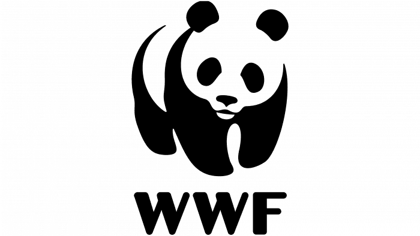

GreenPeace
Greenpeace is an independent campaigning organisation,which uses peaceful, creative confrontation to expose global environmental problems, and develop solutions for a green and peaceful future.
Learn more
World Wide Fund for Nature (WWF)
Building a future in which humans live in harmony with nature.
From forests to seas, WWF-Malaysia works to help protect our country's natural environment through various conservation programmes. Everyone, animals and humans alike, need healthy forests, rivers and seas to survive. By protecting Malaysia’s natural ecosystems and conserving our priceless biodiversity, WWF- Malaysia is helping to protect our livelihoods, food security and freshwater supply, thus securing our good quality of life and our children’s future.
Learn moreMalaysian Nature Society (MNS)
MNS’ Conservation Initiatives aim to secure environmentally sensitive areas, key habitats and species in Malaysia. The initiative will work toward securing an integrated, comprehensive and representative Protected Area system in Malaysia.
Learn moreForest Research Institute Malaysia (FRIM)
FRIM is committed to providing effective research and related supporting services to fulfil its customers’ needs. We ensure that those working with and for us shall be committed and adhered to the identified quality standards. FRIM will carry out continual improvements to enhance the effectiveness of related systems.
Learn moreSahabat Alam Malaysia(SAM)
Sahabat Alam Malaysia – Friends’ of the Earth Malaysia (SAM), is an independent non-profit national organisation established in 1977 in Malaysia under its Societies Act 1966. Their vision is to create a peaceful and sustainable world based on societies living in harmony with nature. We envision a society of interdependent people living in dignity, wholeness and fulfillment in which equity and human and peoples’ rights are realised.
Learn more